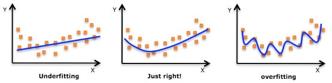

本文介绍：
- 过拟合和欠拟合
- 正则化
- 正则化逻辑回归
过拟合和欠拟合
什么是过拟合呢？
一个很直观的图如下：

给定一些点让你进行拟合，上图中间的图很好的完成了任务。而第一个图采用一条直线，过于简单，称为欠拟合（Underfitting），而最后一个图画出了弯弯曲曲的曲线，看上去拟合效果很好，但其实过于复杂，称为过拟合（Overfitting）。
简单的说：
- 太简单----欠拟合，没有充分的挖掘数据间的规律
- 太复杂----过拟合，过分挖掘数据间的规律了
还不知道？看看下面的最后一个图:

竟然画了一只猫！想象力太丰富啦 : )
危害
欠拟合的危害就是在你的训练数据上表现也不高，更不要说在验证集上了。
过拟合在训练集上做得很好，但是模型的泛化能力差，好比学生在平时练习的时候，把作业答案都背了下来，而考试的时候老师把题目的数字稍微一改，就不会做了。
总而言之，欠拟合和过拟合都会使你模型的效果不好。
判断欠拟合和过拟合
在介绍如何判断过拟合还是欠拟合前，顺带介绍一下两个概念：偏差(Bias)和方差(Variance)
- 偏差Bias： 描述模型输出结果与真实结果的差距，即刻画的是算法的拟合能力。Bias高说明你的模型拟合效果不好。低Bias对应的就是下图中点都在靶心附近，即瞄得比较准。
- 方差Variance：度量了同样大小的训练集的变动所导致的学习性能的变化，即刻画了数据扰动所造成的影响。Variance太大说明模型不稳定。低Variance就是下图中点比较集中，即手比较稳。
一张形象的图如下：
好了，接下来说说如何判断过拟合和欠拟合。
前面提到，欠拟合就是想得太简单，想要用太简单的模型去做超过了这个模型的描述能力,或者说你的特征不够不足以描述数据，因此在训练集和测试集上效果都不好，此时模型的Bias很大。
而过拟合则是太复杂，模型过于复杂，对训练集的数据过于充分的拟合，因此在训练集上效果很好，但是测试集上就很差。此时模型的Variance很大。
这里，有一个机器学习的思想就是，偏差Bias和方差Variance的tradeoff。
如果想要做到低Bias，得复杂化模型，增加模型的参数，但这样容易过拟合，过拟合对应上图是high variance，点很分散，虽然瞄得准，但手不一定稳。 而要做到低Variance，就要简化模型，减少模型的参数，但这样容易欠拟合，欠拟合对应上图是high bias，点偏离中心。低variance对应就是点都打的很集中，但不一定是靶心附近，手很稳，但是瞄的不准。
有人对这个tradeoff解释得十分通俗易懂，这里摘录如下：
我们训练一个模型的最终目的，是为了让这个模型在测试数据上拟合效果好，也就是Error(test)比较小，但在实际问题中，test data我们是拿不到的，也根本不知道test data的内在规律（如果知道了，还machine learning干啥 ），所以我们通过什么策略来减小Error(test)呢？
分两步：
- 让Error(train)尽可能小
- 让Error(train)尽可能等于Error(test)
三段论，因为A小，而且A=B，这样B就小。
那么怎么让Error(train)尽可能小呢？——》把模型复杂化，把参数搞得多多的，这个好理解，十元线性回归，肯定error要比二元线性回归低啊。——》low bias
然后怎么让Error(train)尽可能等于Error(test)呢？——》把模型简单化，把参数搞得少少的。什么叫Error(train)=Error(test)？就是模型没有偏见，对train test一视同仁。那么怎样的模型更容易有这这种一视同仁的特性，换句话说，更有『通用性』，对局部数据不敏感？那就是简单的模型。——》low variance
我们想要Bias和Variance都要做到比较小，而这两个又是比较矛盾的，一个是要模型复杂，一个是要模型简单，因此干脆就中庸一点把，就是取中间，做一个tradeoff。有一个直观的图如下：
- 一开始复杂度低，训练集和测试集效果都不好。
- 之后提升模型复杂度，训练集上是做好了，但是结果发生了过拟合，测试集上的错误反而变高。
这里先小小的剧透一下，之后会提到正则化，而正则化用于限制模型复杂度，这正是tradeoff的体现。
常见解决办法
对于欠拟合，可以
- 增加新特征
- 增加模型复杂度，如原来线性模型，改用非线性模型
- 有正则化项可以减少正则项参数
对于过拟合，可以
- 增加数据集
- 降低模型复杂度，使用简单点的模型
- 特征选择
- 正则化
- 已经有正则化项则加大正则化参数
- 集成学习方法
正则化
前面提到，正则化可以防止模型过拟合。正则化的作用是对复杂的模型进行调整，使复杂模型“变成”比较简单的模型，可以说是降低方差。
下面介绍L1和L2正则这两个常见的正则化方法。
L2正则
回顾一下我们之前讲的线性回归问题：
这个模型可能过于简单，比如超平面应该是圆形的情况我们用这模型就没办法做得很好。因此我们可能将其做非线性变换到z空间：
如Q=2和Q=10得到
\begin{align*} \mathcal{H}_{10} &: w_0 + w_1x + w_2x^2 + w_3x^3 + \ldots + w_{10}x^{10} \\ \mathcal{H}_2 &: w_0 + w_1x+w_2x^2 \end{align*}
然后进行线性的学习，然后进行预测。当Q很大的时候，这个模型很容易过拟合。模型的 从结果上看，Q=2其实是Q=10的时的结果，即简单的模型可以用复杂的模型表示。
我们希望模型不那么复杂，又有一定的表现能力，为此，我们可以让模型的系数的非0项尽可能的少，比如小于3个
\begin{align*} \min_{ {\bf w}} &\hspace{2ex} \frac{1}{N}\sum_{i=1}^N({\bf w}^\mathsf{T}{\bf z}_i - y_i)^2 \\ {\rm s.t.} &\hspace{2ex} \sum_{q=0}^{d}[\![w_q \not= 0]\!] \le 3\tag{2-1} \end{align*}
得到的新模型（表达能力强于，风险能力弱于），但这是一个NP问题，退而求其次，可以让平方和小于某个常数，即：
\begin{align*} \min_{ {\bf w}} &\hspace{2ex} {\rm E_{in}} =\frac{1}{N}\sum_{i=1}^N({\bf w}^\mathsf{T}{\bf z}_i - y_i)^2 \\ {\rm s.t.} &\hspace{2ex} \sum_{q=0}^{d}w_q^2 \le C \end{align*}
写成矩阵的形式就是：
\begin{align*} \min_{ {\bf w}} &\hspace{2ex}E_{\rm in}({\bf w}) = \frac{1}{N}({\rm Z}{\bf w} - {\bf y})^\mathsf{T}({\rm Z}{\bf w} - {\bf y}) \\ {\rm s.t.} &\hspace{2ex} {\bf w}^\mathsf{T}{\bf w} \le C \end{align*}
如何求解这个问题？从几何意义上讲，限制条件把w限制在了一个半径为C的超球体中，如下图所示：

紫色的点标识出当前w对应的位置，其蓝线为这个时刻的一条等高线（上面的值都相等），本来根据梯度下降法，沿着负梯度方向向下滚动减少目标值。但是限制有了限制条件，不能跑出这个超球体，因此只能沿着的分量（绿色的方向）移动，移动到什么位置就不能移动了呢？即超球体的切线方向和垂直，也就是最优的必然与方向平行,设比例为
PS：其实这就是拉格朗日乘子法的几何意义，关于拉格朗日乘子法和KKT条件，会在之后深入理解SVM章节继续介绍并大量使用。
求梯度并带入2-3，得：
\begin{align*} \frac{2}{N} ({\rm Z}^\mathsf{T}{\rm Z}{\bf w}_{\rm REG} - {\rm Z}^\mathsf{T}{\bf y}) + \frac{2\lambda}{N}{\bf w}_{\rm REG} = 0 \hspace{2ex} \Rightarrow{\bf w}_{\rm REG} = ({\rm Z^\mathsf{T}Z + \lambda I})^{-1}{\rm Z}^\mathsf{T}{\bf y} \end{align*}
给定λ>0，由于是半正定矩阵，是正定矩阵，两者相加也是正定矩阵，因此存在逆矩阵，上式总可求解。
其实还可以把2-3写为：
然后求解2-4效果是一样的。
矩阵太可怕了？≡(▔﹏▔)≡ 那改成平易近人的写法就是：
式2-5也常称为岭回归(ridge regression)。最后一项就称为L2正则化项。称为正则化项系数。越大，w就越小，其范数C也就越小，但也越容易欠拟合。
林轩田老师给出了不同的效果图

L1正则
2-5式的最后一项进行修改就得到了L1正则
L1正则也被称为LASSO(Least Absolute Shrinkage and Selection Operator)，L1正则和L2正则一样，都可以降低模型复杂度的风险，但是L1正则的好处是会得到一个稀疏解。这也是为什么L1正则不是处处可微仍广受青睐的原因。
为什么会得到一个系数解呢？上面我们提到L2正则相当于限制在一个超球体中，而L1正则则相当于限制在一个超正方体中。假设二维的情况，如下图所示:

类似之前的L2正则，由于限制条件的存在，往负梯度方向移动时，只能沿着分量，这样才不会超出限制范围。只有当w的移动方向与法向量（红色的箭头）垂直时，w达到最优解。可以看出w在正方形边界上的时候，这种情况一般不会发生，因此w会沿着负梯度方向的一个分量不断移动，直到到达顶点处。在顶点处意味着和某坐标轴相交，即某些的值为0，比如这里二维情况就是或者为0。而L2正则的解往往在某象限中，即或者非0。因此，L1比L2更易于得到稀疏解。
而对w取稀疏解意味着在初始的d个特征中仅有对应着w的非零分量的特征才会出现在最终模型中。求解L1正则的结果便是得到了仅采用一部分初始特征的模型。换言之，基于L1正则化的学习方法就是一种嵌入式特征选择方法，其特征选择和学习器的训练过程融为一体，同时完成。
关于L1更能得到稀疏解有另一种说法，
L1正则化会让参数变得更加稀疏（更多的参数变为0），而L2不会,因为参数很小时如0.0001平方基本可以忽略了。
L1正则求解
前面提到过，L1正则不是处处可微的，求解起来不像L2正则那么容易。
求解L1正则可以用近端梯度下降（Proximal Gradient Descent），本文不做具体介绍，感兴趣的可以参阅周志华的《机器学习》第253页。
L0正则
什么，还有L0正则？木有错！
L0正则是非0元素的个数。其实上面我们提过式2-1就可以看成L0正则，这是一种很直观限制模型复杂度的方法。但是遗憾的是不连续难以优化求解。因此往往用L1正则近似。
基于后验理解正则化
上面的介绍可以说是用最优化约束条件来介绍正则话，其实还可以用先验和后验概率进行解释：正则化相当于对模型参数引入了先验分布。引入了正确的先验分布，可以在较小的数据集中有良好的泛化性能，也能有效的防止过拟合。
最大似然估计和最小二乘
为了阐述之后的L1、L2正则和先验分布的关系，我们先来个开胃菜，即没有引入正则化之前是什么样子的。
我们都比较熟悉高斯分布，设,则高斯分布的概率密度函数为：
其中为均值，为方差。

下面以最简单的线性回归为例，给定数据集, 和预测值之间的误差为，因此有下式：
假设, 则 ，即给定数据 和模型的参数模型得到的概率为：
我们可以用最大似然估计来求使得数据集出现最大的概率对应的参数：
\begin{align*} \arg \max_w\mathcal{L}({\bf w}) &= \ln \prod_{i=1}^n \frac{1}{\sqrt{2\pi} \sigma} \exp\left(- \frac{( y_i - {\bf w^Tx_i})^2}{2\sigma^2}\right)\\ &= \sum_{i=1}^n \left(-\ln \sigma\sqrt{2\pi} - \frac{( y_i - {\bf w^Tx_i})^2}{2\sigma^2} \right)\\ &= -\frac{1}{2\sigma^2}\sum_{i=1}^n \left(y_i - {\bf w^Tx_i} \right)^2 - n\ln \sigma\sqrt{2\pi} \end{align*}
我们想优化min的话，即取上式的相反数，于是有：
\begin{align*} \arg \min_w\mathcal{L}({\bf w}) &= \frac{1}{2\sigma^2}\sum_{i=1}^n \left(y_i - {\bf w^Tx_i} \right)^2 + n\ln \sigma\sqrt{2\pi}\\ &= \sum_{i=1}^n \left(y_i - {\bf w^Tx_i} \right)^2 \hspace{4ex} 其它为常数，和优化无关 \end{align*}
这就得到了最小二乘。为什么呢？最小二乘想要求一条回归线，该回归线到数据点的平方距离之和最小。而当我们假设待求分布为高斯分布时，最大概率会在平均值附近找到，又因为高斯分布是对称的，相当于最小化数据点与平均值之间的距离。
高斯分布和L2正则
假设, 参数, 可以用MAP来求使得数据集出现最大的概率对应的参数：
\begin{align*} \arg \max_w\mathcal{L}({\bf w}) &= \prod_{i=1}^n p(y_i | {\bf w}, {\bf x_i}) p({\bf w})\\ &=\ln \prod_{i=1}^n \frac{1}{\sqrt{2\pi} \sigma} \exp\left(- \frac{( y_i - {\bf w^Tx_i})^2}{2\sigma^2}\right) \prod_{j=1}^d \frac{1}{\sqrt{2\pi} \xi} \exp\left(- \frac{ w_j^2}{2\xi^2}\right)\\ &=\ln \prod_{i=1}^n \frac{1}{\sqrt{2\pi} \sigma} \exp\left(- \frac{( y_i - {\bf w^Tx_i})^2}{2\sigma^2}\right) +\ln\prod_{j=1}^d \frac{1}{\sqrt{2\pi} \xi} \exp\left(- \frac{w_j^2}{2\xi^2}\right)\\ &= \sum_{i=1}^n \left(-\ln \sigma\sqrt{2\pi} - \frac{( y_i - {\bf w^Tx_i})^2}{2\sigma^2}\right) + \sum_{j=1}^d \left(- \ln \xi\sqrt{2\pi} - \frac{ w_j^2}{2\xi^2} \right)\\ &= -\frac{1}{2\sigma^2}\sum_{i=1}^n \left(y_i - {\bf w^Tx_i} \right)^2 - \frac{1}{2\xi^2}\sum_{j=1}^dw_j^2 - n\ln \sigma\sqrt{2\pi} - d\ln\xi\sqrt{2\pi} \end{align*}
我们想优化min的话，即取上式的相反数，于是有：
\begin{align*} \arg \min_w\mathcal{L}({\bf w}) &= \frac{1}{2\sigma^2}\sum_{i=1}^n \left(y_i - {\bf w^Tx_i} \right)^2 + \frac{1}{2\xi^2}\sum_{j=1}^dw_j^2 + n\ln \sigma\sqrt{2\pi} +d\ln\xi\sqrt{2\pi}\\ &= \sum_{i=1}^n \left(y_i - {\bf w^Tx_i} \right)^2 +\frac{1}{2\xi^2}{\bf w^Tw}\hspace{4ex} 其它为常数，和优化无关\\ & = \sum_{i=1}^n \left(y_i - {\bf w^Tx_i} \right)^2 + \lambda |\!| {\bf w}|\!|_2^2 \hspace{4ex} \end{align*}
这样就得到了L2范式，即岭回归！
拉普拉斯分布和L1正则
拉普拉斯分布我们比较少见，它长什么样子呢？
拉普拉斯分布的概率密度函数让我们联想到高斯分布，但是，高斯分布是用相对于 μ 平均值的差的平方来表示，而拉普拉斯概率密度用相对于平均值的差的绝对值来表示。因此，拉普拉斯分布的尾部比正态分布更加平坦。

假设, 参数, 可以用MAP来求使得数据集出现最大的概率对应的参数：
\begin{align*} \arg \max_w\mathcal{L}({\bf w}) &= \prod_{i=1}^n p(y_i | {\bf w}, {\bf x_i}) p({\bf w})\\ &=\ln \prod_{i=1}^n \frac{1}{\sqrt{2\pi} \sigma} \exp\left(- \frac{( y_i - {\bf w^Tx_i})^2}{2\sigma^2}\right) \prod_{j=1}^d \frac{1}{2b} \exp\left(- \frac{ |w_j|}{b}\right)\\ &=\ln \prod_{i=1}^n \frac{1}{\sqrt{2\pi} \sigma} \exp\left(- \frac{( y_i - {\bf w^Tx_i})^2}{2\sigma^2}\right) +\ln\prod_{j=1}^d \frac{1}{2b} \exp\left(- \frac{|w_j|}{b}\right)\\ &= \sum_{i=1}^n \left(-\ln \sigma\sqrt{2\pi} - \frac{( y_i - {\bf w^Tx_i})^2}{2\sigma^2} \right) +\sum_{j=1}^d\left( -\ln{2b} - \frac{|w_j|}{b} \right)\\ &= -\frac{1}{2\sigma^2}\sum_{i=1}^n \left(y_i - {\bf w^Tx_i} \right)^2 - \frac{1}{b}\sum_{j=1}^d|w_j|- n\ln \sigma\sqrt{2\pi} - d\ln2b \end{align*}
我们想优化min的话，即取上式的相反数，于是有：
\begin{align*} \arg \min_w\mathcal{L}({\bf w}) &= \frac{1}{2\sigma^2}\sum_{i=1}^n \left(y_i - {\bf w^Tx_i} \right)^2 + \frac{1}{b}\sum_{j=1}^d|w_j|+ n\ln \sigma\sqrt{2\pi}+ d\ln2b\\ &= \sum_{i=1}^n \left(y_i - {\bf w^Tx_i} \right)^2 + \frac{1}{b}\sum_{j=1}^d|w_j| \hspace{4ex} 其它为常数，和优化无关\\ & = \sum_{i=1}^n \left(y_i - {\bf w^Tx_i} \right)^2 + \lambda |\!| {\bf w}|\!|_1 \hspace{4ex} \end{align*}
这样就得到了L1范式。从上式也可以看出，越大（正则化的权重），则相当于越小，参数越集中在0附近，模型也就越简单。
此外，高斯分布在极值点（0处）是平滑的，也就是说高斯分布认为w在极值点附近取不同值的可能性是接近的，因此，L2正则只会让w更接近0，而不会等于0。而拉普拉斯分布在极值点（0处）是一个尖峰，所以参数取0的可能性更高。
正则化逻辑回归
前面已经正则化过线性回归了，回想上一讲的逻辑回归模型，我们同样可以加入正则化。
回想我们用极大似然法推导出来的损失函数为：
我们可以加入L2正则化项：
L(w)对求偏导，有：
于是，w的更新公式为：
其实就是多了一项而已，简单~
参考资料
- 《机器学习》 周志华
- 机器学习基石 - 林轩田 （第14讲正则化）
- 机器学习防止欠拟合、过拟合方法
- Laplace（拉普拉斯）先验与L1正则化
- LR正则化与数据先验分布的关系？ - Charles Xiao的回答